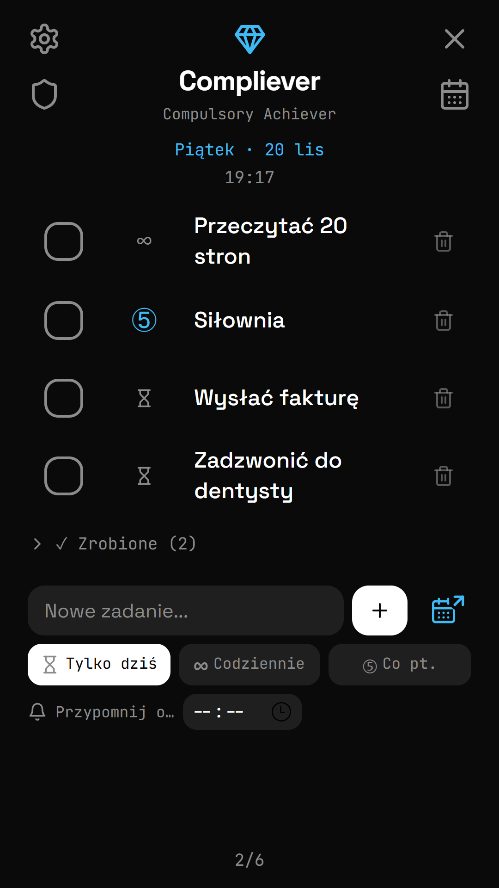
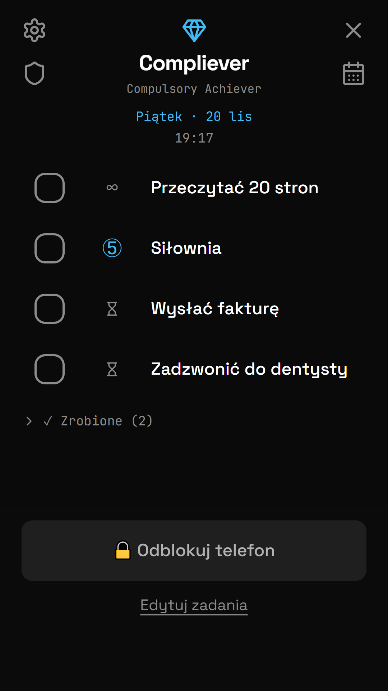
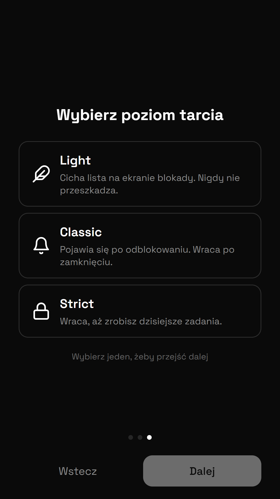
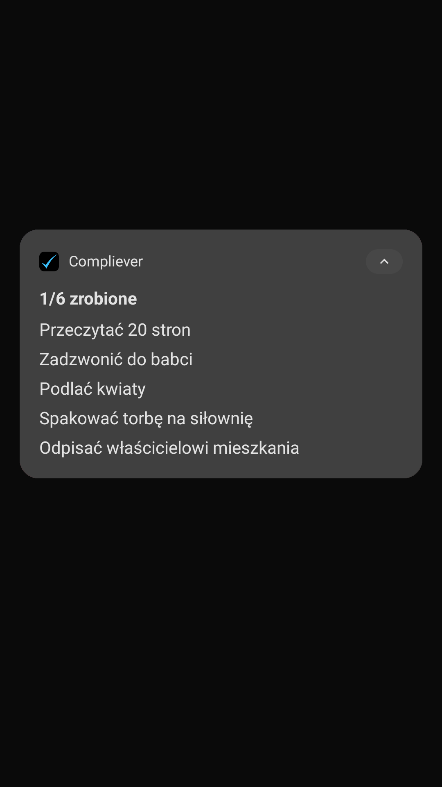
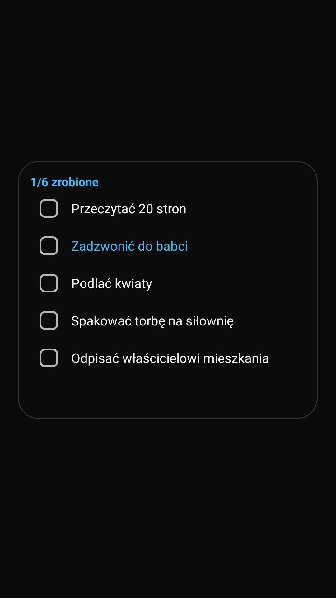

Odkładanie zaczyna się od jednego odblokowania. Compliever (Compulsory Achiever) najpierw pokazuje dzisiejsze zadania – robisz je, zanim zaczniesz przewijać. Na Androida.
Lista żyje w powiadomieniu i w widgecie na pulpicie. Żadnego okna nad aplikacjami, odblokowanie odciskiem palca działa jak zwykle.
Lista otwiera się na pełnym ekranie po odblokowaniu i na ekranie blokady. Zamknięta wraca po wybranym czasie.
Jak Classic, ale wraca po 1 minucie, aż dzisiejsze zadania będą zrobione.





Najpierw sprawdź poziom: Light nigdy nie otwiera okna – lista jest w powiadomieniu i w widgecie. W Classic i Strict otwórz Ustawienia → Uprawnienia i niezawodność: wszystkie wiersze powinny być zielone. „Napraw” otwiera właściwy ekran, „Testuj teraz” sprawdza, czy okno otwiera się samo.
Wiele telefonów zatrzymuje aplikacje w tle, żeby oszczędzać baterię. Ustawienia dla najpopularniejszych marek (nazwy mogą się trochę różnić między wersjami):
Kreator w aplikacji pokazuje te kroki dla Twojego telefonu.
Light: tylko powiadomienie i widget, nic nie zasłania ekranu. Classic: lista na pełnym ekranie po odblokowaniu i na ekranie blokady; zamknięta wraca po ustawionym czasie. Strict: jak Classic, ale wraca po 1 minucie, aż dzisiejsze zadania będą zrobione. Poziom zmienisz w każdej chwili w Ustawienia → Wyświetlanie.
Kreator i Ustawienia → Wyświetlanie mogą poprosić telefon o dodanie widżetu. Niektóre telefony (np. Realme) mówią, że go dodały, ale nigdzie go nie stawiają. Jeśli widżetu nie ma na ekranie głównym, dodaj go ręcznie:
Wskazówka: przytrzymaj widżet, żeby go powiększyć.
Nie. Budzik, minutnik i połączenia zawsze mają pierwszeństwo. Lista ustępuje i wraca, gdy się skończą.
Na niektórych telefonach okno nad ekranem blokady wyłącza czytnik odcisku palca. Odblokuj przyciskiem na liście albo wybierz Light, który nigdy nie otwiera okna.
Od wersji 1.0.11: jeśli kopia zapasowa telefonu w Androidzie jest włączona, zadania i ustawienia wrócą same po instalacji Compliever na nowym telefonie. Możesz też użyć Ustawienia → Dane → Kopia zapasowa → „Eksportuj do pliku” i zaimportować plik na nowym telefonie. Uprawnienia ustawia się na nowym telefonie od nowa.
Compliever jest darmowy, bez limitu zadań i bez konta. Opcjonalne Premium i Founder – wkrótce.
Wszystko zostaje w telefonie. Aplikacja nie ma serwera i niczego nie wysyła. Szczegóły: polityka prywatności.